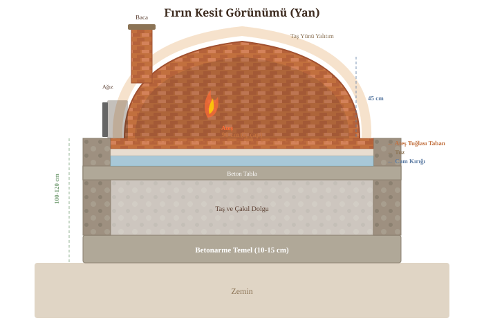
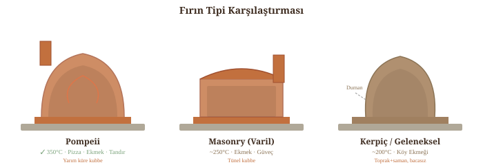

Fırın Anatomisi
Taş fırın üç temel ögeden oluşur: zemin, kubbe ve altyapı. Aşağıdaki kesit tüm katmanları gösteriyor:

Fırın Tipleri
Üç ana fırın tipi ve farklılıkları:

Toskana vs. Napoli Stili (Forno Bravo Plans, s.9)
Napoli stili: Daha agresif eğri, daha düz/alçak kubbe. Pizza için optimize — alçak kubbe ateşten daha fazla ısıyı yansıtır. Ancak düşük kubbe büyük tencere/rosto girişini kısıtlayabilir.
Toskana stili: Daha az agresif eğri, daha yüksek kubbe. Kapı üstünde daha fazla alan = ısıyı daha verimli tutar, daha az odun yakar. Yüksek kubbe yapımı da daha kolay — tuğla düşme riski azalır.
Pratik fark: 90 cm fırında iki stil arasındaki kubbe yükseklik farkı sadece 8-10 cm'dir. İkisi de mükemmel çalışır.
Neden Yuvarlak Kubbe?
Yuvarlak kubbe 1 saatten kısa sürede ısınır — varil fırın 2-3+ saat alır. Yuvarlak kubbe kendi kendini taşır (Floransa Duomo gibi), beton payanda gerektirmez ve 5-10 cm kalınlıkta yeterlidir (varil: 23 cm+). Ayrıca yuvarlak kubbe ısıyı eşit yansıtır — dikdörtgen fırınlarda sıcak/soğuk noktalar oluşur. (Forno Bravo Pompeii Plans v2.0, s.7)
Standart Ölçüler
Altın kural: kubbe yüksekliği = iç çapın yarısı.
Fırın İç Çapı
90 cm
Kubbe Yüksekliği
45 cm
Ağız Genişliği
42 cm
Ağız Yüksekliği
30 cm
Temel Boyutu
180×160 cm
Zemin Yüksekliği
100-120 cm
Duvar Kalınlığı
~10 cm
Meşe Odunu Besleme
~3 kg/saat
Kapı Yüksekliği: Pizza mı, Güveç mi?
Kapı yüksekliği fırının kullanım amacına göre seçilmelidir. Standart kural: ağız yüksekliği = kubbe yüksekliğinin %63'ü. 45 cm kubbede bu ~28 cm yapar. Ancak Türk mutfağında fırına güveç, çömlek ve derin tencere sokma ihtiyacı vardır — bu durumda daha yüksek kapı gerekir.
Seçenekler (90 cm / 45 cm kubbe için):
• 28 cm — %63 kuralı. Pizza ve ekmek için en verimli (ısı kaybı minimum). Ancak kapaklı güveç çömleği sığmayabilir.
• 30 cm (Toskana standardı) — Önerilen uzlaşma. Pizza verimi hala iyi (%67 oran), güveç/döküm tencere rahat geçer. Kuzu tandır ve dana kaburga için yeterli.
• 32-33 cm — Büyük çömlekler ve derin tepsiler için. Isı kaybı biraz artar ama çok amaçlı kullanımda pratik. Ağır güveç yemekleri yapacaklar için ideal.
Pratik ipucu: Kapıyı yapmadan önce en büyük tencerenizi/güvecinizi ölçün ve +2 cm ekleyin.
Seçenekler (90 cm / 45 cm kubbe için):
• 28 cm — %63 kuralı. Pizza ve ekmek için en verimli (ısı kaybı minimum). Ancak kapaklı güveç çömleği sığmayabilir.
• 30 cm (Toskana standardı) — Önerilen uzlaşma. Pizza verimi hala iyi (%67 oran), güveç/döküm tencere rahat geçer. Kuzu tandır ve dana kaburga için yeterli.
• 32-33 cm — Büyük çömlekler ve derin tepsiler için. Isı kaybı biraz artar ama çok amaçlı kullanımda pratik. Ağır güveç yemekleri yapacaklar için ideal.
Pratik ipucu: Kapıyı yapmadan önce en büyük tencerenizi/güvecinizi ölçün ve +2 cm ekleyin.
📐 Forno Bravo Boyut Tablosu (Plans v2.0, s.13)
| Stil | İç Çap | İç Yükseklik | Ağız Genişliği | Ağız Yüksekliği | Kapasite |
|---|---|---|---|---|---|
| Alçak (Napoli) | 91 cm | 37 cm | 46 cm | 25 cm | 2-3 pizza / 17 ekmek |
| Alçak (Napoli) | 107 cm | 39 cm | 48 cm | 28 cm | 4-5 pizza / 26 ekmek |
| Yüksek (Toskana) | 91 cm | 46 cm | 48 cm | 30 cm | 2-3 pizza / 17 ekmek |
| Yüksek (Toskana) | 107 cm | 53 cm | 51 cm | 32 cm | 4-5 pizza / 26 ekmek |
Akademik Doğrulama
Napoli Üniversitesi araştırmasına göre (Falciano et al., 2022) profesyonel Napoliten fırınların standart boyutları: 105-140 cm zemin çapı, 40-45 cm kubbe yüksekliği, 45-50 cm ağız genişliği. Ev tipi 90 cm çaplı fırın bu oranları küçük ölçekte uygular.